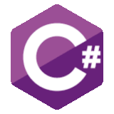

As 5 linguagens de programação mais utilizadas em 2022
1.Python

Python, por ser simples, vem ganhando muita fama nos ultimos anos, principalmente quando o assunto é: data science, big data, machine learning, e tambem desenvolvimento web. Criada em 1989 por Guido Van Hossum. Python é uma linguagem de Programação Orientada a Objetos(POO).Os arquivos python terão a extensão ".py" e os arquivos compilados terão a extensão ".pyc"
2.Java

3.JavaScript
4.C#
4.C++